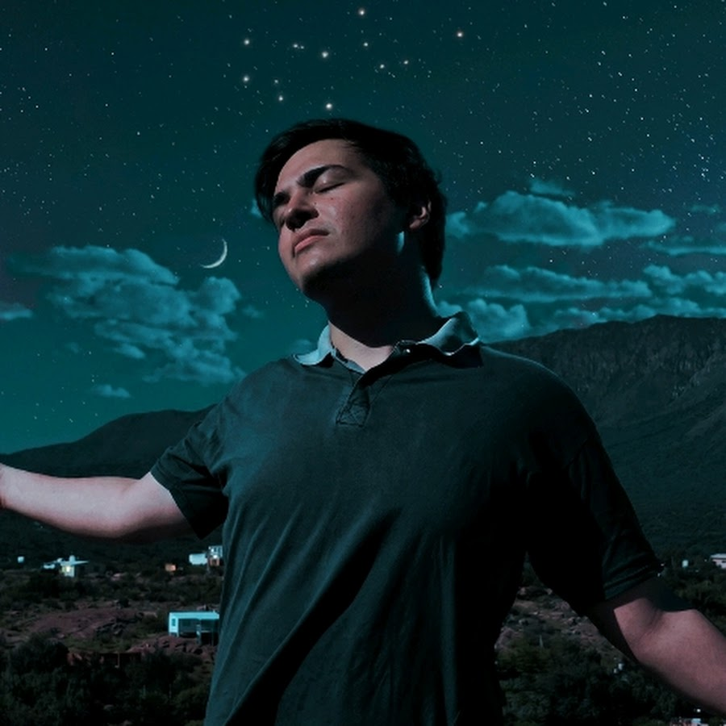
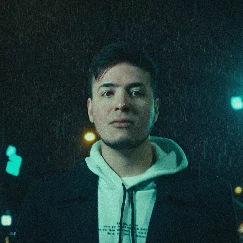

Cantante y Compositor Independiente
Valen Piccoli es un cantante y compositor independiente de Argentina, nacido en 1999. Comenzó a componer y grabar demos a la edad de 11 años. Desde entonces, ha realizado covers y ha compuesto canciones de forma regular. En 2019 lanzó su primer sencillo Aunque En Mi Mente Aún Estes; que cuenta con la producción de DJ Shands, luego lanza la versión remix producida por Rayzon. En abril de 2019 lanzó Azul; la cual tuvo 3.9K de visitas en YouTube. En 2020 lanzó Indeciso; que cuenta con más de 6K de visitas en Youtube. También colaboró en canciones Don't Mess With Me, Solo Tú y Falsas Promesas junto a @Levy El Melódico. En el 2022 realizó su primera presentación en La Plata, luego en Quilmes, y en el 2023 y 2024 realizó diversas presentaciones por CABA y zona oeste de Buenos Aires. En 2023 también lanzó su álbum Nostálgico, el cual coprodujo junto a RAYZØN. En el 2025 lanzó su álbum LA TORMENTA con sus singles APAGÓN, 11:11, XTASIS y HÉROE. En el 2026 lanza su nuevo álbum ONÍRICO, con temas como Extracorporal, AMANECER y CASUALIDAD.
Fotos oficiales, portadas y presentaciones:


Reproduce mi música oficial aquí:
Escucha los temas en YouTube: